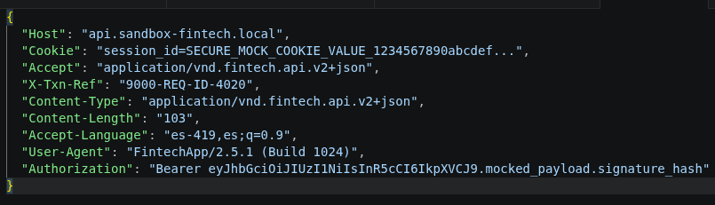
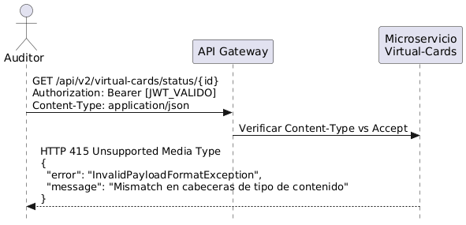
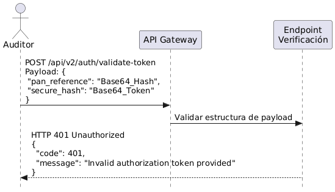
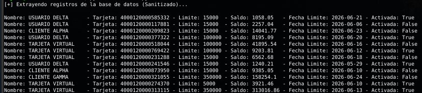
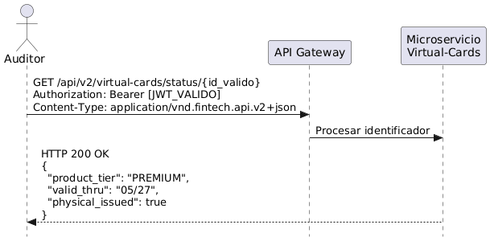

Aviso de Confidencialidad
Por razones de confidencialidad profesional, este artículo no revela el nombre de la aplicación, la entidad financiera ni el cliente para el cual se realizó esta auditoría. Los endpoints, nombres de clases, headers personalizados y cuerpos de petición han sido modificados o generalizados para evitar cualquier trazabilidad hacia la aplicación original. El objetivo de este documento es estrictamente técnico y formativo: transmitir las capacidades de pentesting aplicadas, documentar hallazgos que son fácilmente reproducibles en cualquier aplicación del mismo rubro, y exponer patrones de implementación deficiente que se repiten en la industria. Todos los datos mostrados en las capturas de pantalla han sido anonimizados o generados en entornos controlados de prueba. Este trabajo fue ejecutado como parte de un servicio freelance de pentesting contratado bajo acuerdo de confidencialidad en 2024.
1. Contexto del Proyecto
Entre junio y agosto de 2024 ejecuté —como especialista freelance en pentesting— una auditoría de seguridad ofensiva sobre una Web API del sector financiero. El objetivo era claro: identificar vulnerabilidades en el control de acceso, la autenticación y el ciclo de vida de los tokens de sesión. Lo que encontré superó cualquier expectativa inicial y, lamentablemente, refleja un patrón que he visto repetirse en múltiples evaluaciones: aplicaciones que invierten en seguridad perimetral pero fallan en la lógica fundamental de autorización.
El compromiso fue del tipo white box con enfoque grey box: tenía acceso a la aplicación móvil como usuario legítimo, pero no a la documentación de la API ni al código fuente del backend. Todo el análisis partió desde la ingeniería inversa del APK y la interceptación del tráfico de red. Esta metodología es consistente con lo que documenta el OWASP Mobile Security Testing Guide (MSTG) en su sección sobre pruebas de seguridad de APIs en aplicaciones móviles, donde se recomienda combinar el análisis estático del cliente con la interceptación dinámica del tráfico. Esta misma metodología de ingeniería inversa de binarios es la que aplico en el análisis de malware PE con Capstone y x64dbg, pero orientada a APKs en lugar de ejecutables Windows.
2. Fase 1: Análisis de los Encabezados HTTP y Autenticación
El primer paso fue interceptar el tráfico entre la aplicación móvil y la API para entender la estructura de autenticación. La aplicación utilizaba certificate pinning, lo que dificultó la configuración del proxy. Una vez superada esa barrera, comencé a documentar los encabezados HTTP que el cliente enviaba en cada petición.

Los encabezados revelaron una arquitectura de microservicios con versionado de API, autenticación basada en JWT y cookies de sesión con identificadores de transacción. Este nivel de detalle es una mina de oro para un pentester: cada encabezado personalizado es un punto de entrada potencial para manipulación.
3. Fase 2: Errores de Autenticación y Fuga de Información
Durante las primeras pruebas de autenticación, la API expuso errores inusualmente descriptivos. Al enviar credenciales en formato Basic en lugar del token JWT esperado, el servidor no solo rechazó la petición: reveló detalles internos de su arquitectura.

El error CoreBankingAuthException no es un mensaje genérico: revela el nombre de una excepción personalizada del backend, lo que permite a un atacante inferir la nomenclatura interna, la estructura de paquetes y potencialmente la tecnología del core bancario subyacente.
Al corregir el formato de autenticación y enviar un token JWT válido, la API respondió con un error diferente. Esta vez, el problema era el encabezado Content-Type.

La excepción InvalidPayloadFormatException confirmó que la API exigía un Content-Type específico, probablemente el versionado application/vnd.fintech.api.v2+json que aparecía en los encabezados originales. Este nivel de verbosidad en los errores, aunque útil para debugging, proporciona a un atacante un mapa preciso de los requisitos de formato de cada endpoint.
Hallazgo Crítico: Verbosidad del Backend
Los errores 401 y 415 devueltos por la API exponían nombres de excepciones personalizadas y detalles de implementación. Esta verbosidad está clasificada por el OWASP Testing Guide en su sección "Testing for Error Handling" como una vulnerabilidad de exposición de información que facilita la enumeración de la pila tecnológica del backend. Este mismo patrón de fugas de información por malas configuraciones es el que documenté en el caso cmdxcapital, donde un appDebug:true en Laravel expuso consultas SQL y rutas del servidor. La lección es transversal: los mensajes de error son una ventana al backend que debe cerrarse en producción.
4. Fase 3: Validación JWT y Reutilización de Tokens
El corazón del problema estaba en la gestión de sesiones. Una vez que un usuario se autenticaba exitosamente, el servidor emitía un token JWT que debía ser validado en cada petición subsiguiente. Sin embargo, el backend no verificaba adecuadamente si el token presentado pertenecía al usuario que realizaba la petición.

El error de firma JWT confirmó la librería utilizada: io.jsonwebtoken.SignatureException. Pero el verdadero problema no era la firma —que estaba correctamente implementada— sino la falta de validación de pertenencia del token. Un token JWT válido para el usuario A podía ser utilizado para acceder a los recursos del usuario B, siempre que se conociera el identificador del recurso objetivo.

La validación de tokens existía, pero era insuficiente. El endpoint de verificación rechazaba tokens claramente manipulados, pero no verificaba si un token legítimo pertenecía al usuario que lo presentaba. Esta es la esencia del Broken Object Level Authorization: la autenticación funciona, la autorización no. Este patrón —invertir en seguridad perimetral olvidando la validación interna— es el mismo que deja ciegos a los PLC Siemens sin logs de auditoría: el sistema ejecuta la orden sin cuestionar quién la emitió.
5. Fase 4: IDOR y Extracción Automatizada de Datos
Una vez confirmado que el backend no validaba la pertenencia del token al recurso solicitado, desarrollé un script automatizado para enumerar los identificadores de recursos y extraer la información asociada a cada uno.

El resultado fue devastador. Con un solo token de sesión válido —obtenido de una cuenta legítima de prueba—, el script pudo extraer datos financieros confidenciales de todos los usuarios de la API.

La información expuesta incluía nombres completos, números de instrumentos financieros con BIN visible, límites de crédito, saldos actuales, fechas de corte y estados de activación. La combinación de un token JWT sin validación de pertenencia y un endpoint con IDs secuenciales codificados —un caso clásico de IDOR— permitió la extracción automatizada de datos de todos los usuarios del sistema.
Impacto: Fuga de Datos Financieros Masiva
La PoC desarrollada con Postman demostró de forma controlada que la brecha era explotable con un solo token de sesión válido. Este hallazgo se alinea con el OWASP API Security Top 10 en sus categorías API1:2023 Broken Object Level Authorization y API2:2023 Broken Authentication, consistentemente las vulnerabilidades más prevalentes en APIs.
6. Validación de la Explotación
Para confirmar el alcance de la vulnerabilidad, realicé peticiones controladas a endpoints específicos que devolvían información detallada de los productos financieros asociados a cada usuario.

La API no solo devolvía datos de identificación, sino también parámetros internos del producto —nivel, fecha de vencimiento, estado de emisión— que jamás deberían ser expuestos a través de un endpoint accesible al cliente sin validación de pertenencia.
7. Conclusión y Lecciones Aprendidas
Esta auditoría expuso una verdad incómoda que he visto repetirse en múltiples evaluaciones de seguridad: las aplicaciones invierten en seguridad perimetral —certificate pinning, encriptación de tráfico, ofuscación de código— pero fallan en la lógica fundamental de autorización del backend.
La aplicación tenía capas de protección en la comunicación. Fue difícil configurar el proxy para sniffear el tráfico. La autenticación de certificados estaba bien implementada. Pero una vez dentro, el token JWT era una llave maestra que abría cualquier puerta. El backend confiaba en que si el token era válido, la petición era legítima, sin verificar si el recurso solicitado pertenecía al usuario autenticado.
Envié mis hallazgos al proveedor con recomendaciones concretas: implementar validación de pertenencia del token en cada endpoint, eliminar la verbosidad en mensajes de error, añadir rate limiting en endpoints de enumeración, y migrar los IDs secuenciales a UUIDs no predecibles. No hubo respuesta.
Para el usuario final, la lección es limitada pero importante: usar VPNs, evitar redes públicas para operaciones financieras y mantener la aplicación actualizada. Pero la responsabilidad real recae en el backend. Si la validación de autorización no ocurre en cada endpoint, en cada petición, todo el resto es fachada.
Reflexión Técnica
La encriptación del tráfico debería ser asimétrica, con intercambio de claves en tiempo de ejecución único por cada usuario. Dejar claves a simple vista en el código —por más ofuscado que esté— es un error que una reverseada bien ejecutada expone rápido. Lo ideal son capas y capas de encriptación, con múltiples tipos, donde el backend nunca confíe ciegamente en el token sin verificar su contexto. La seguridad no es un checklist: es una arquitectura. Esta misma filosofía de defensa en profundidad —no confiar en una sola capa— es la que aplico en la infraestructura ofuscada con WireGuard, udp2raw y proxy residencial.
/¿Te interesa la seguridad en APIs y reversing de aplicaciones?
Este caso de IDOR en una API financiera comparte patrón con otras investigaciones del portafolio: la validación incompleta en el backend es el eslabón más débil, ya sea en una API, un PLC industrial o un exchange falso de criptomonedas.
PLC Siemens: Sin Logs → Pig Butchering: Captcha Roto → Triage de Malware →8. Referencias
- PLC Siemens S5/S7: Ingeniería Inversa y la Deficiencia Estructural de Logs (tty503.com)
- Red de Estafa Pig Butchering — Fake Crypto Exchange Multi-Dominio (tty503.com)
- Operación FakeWealth: Inteligencia de Amenazas sobre cmdxcapital (tty503.com)
- Infraestructura Ofuscada: WireGuard sobre TCP Falso + Proxy Residencial (tty503.com)
- analystty: Automatizando el Triage de Malware PE con Python (tty503.com)
- OWASP API Security Top 10 2023 — API1:2023 Broken Object Level Authorization
- OWASP API Security Top 10 2023 — API2:2023 Broken Authentication
- OWASP Mobile Security Testing Guide (MSTG) — Testing Network Communication
- OWASP Testing Guide — Testing for Insecure Direct Object References (IDOR)
- PortSwigger — JWT Attacks: Validation Beyond Signature
- OWASP Top 10 2021 — A01:2021 Broken Access Control
- Burp Suite — Intercepting Proxy for Web Security Testing
- Postman — API Platform for Automated Testing
- JWT.io — JSON Web Tokens Introduction and Debugger